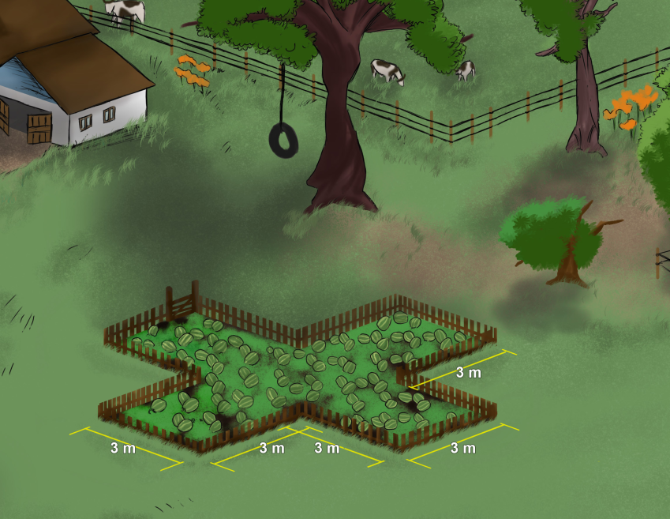
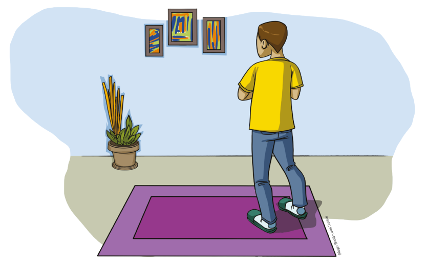
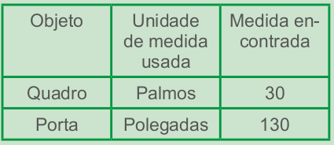
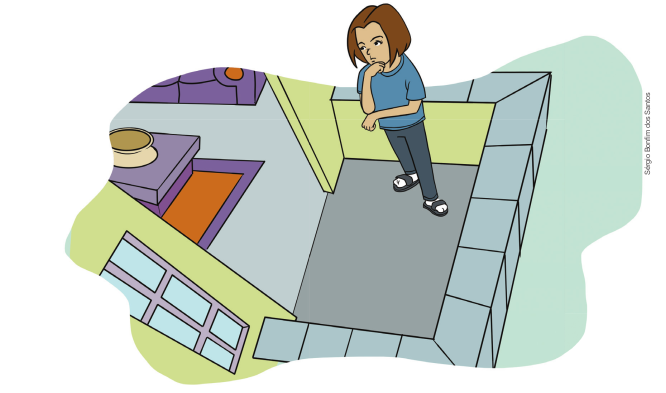
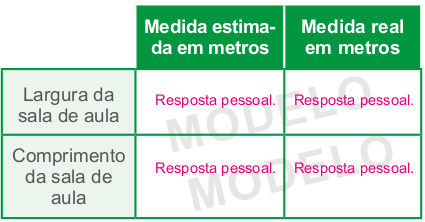

Introdução à unidade
Nesta unidade, damos continuidade ao estudo das medidas de superfície, iniciado nos anos anteriores, retomando o cálculo da área de quadrados, retângulos, paralelogramos e triângulos. Em seguida, iniciamos o estudo do cálculo da área de figuras planas, como o losango e o trapézio. Para o fechamento da unidade, é proposto o cálculo de superfícies compostas por várias figuras planas geométricas.
De acordo com Walle (2009), os conceitos de medidas envolvem ideias importantes:
► Medir envolve uma comparação de um atributo de um objeto ou situação com uma unidade que tenha mesmo atributo. Comprimentos são comparados às unidades de comprimento, áreas às unidades de área, intervalos de tempo às unidades de tempo, e assim por diante. Antes que qualquer coisa possa ser medida significativamente, é necessário compreender o atributo a ser medido.
► Medir significativamente e estimar medidas dependem de uma familiaridade pessoal com a unidade de medida utilizada.
► Estimar medidas e desenvolver referências pessoais para as unidades de medida comumente usadas ajuda o aluno a aumentar sua familiaridade com as unidades, previne erros em medidas e ajuda no uso significativo de medida.
► Os instrumentos de medida são dispositivos que substituem a necessidade por unidades de medida reais. É importante compreender como os instrumentos de medida funcionam para que possam ser usados correta e significativamente.
80
EF07MA01
UNIDADE 3 - Grandezas e medidas
![Ilustração de duas áreas de cultivo em um sítio. A primeira área é formada por um retângulo e dois quadrados. O retângulo tem 9m de base. Na parte superior do retângulo, há dois quadrados, medindo 3m de lado. Entre os dois quadrados há um espaço vazio, produzindo um recuo. O lado de cada quadrado mede 3m e o lado do retângulo somado ao lado do quadrado mede 6 m. A segunda área é composta por dois quadrados unidos. O primeiro tem lados de 6m. Na parte superior esquerda deste quadrado há um quadrado menor, que mede 3m de lado.](../../resources/images/unidade3/capitulo1/imagem1.png)
Orientações específicas
Na abertura desta unidade, é apresentada uma situação que envolve medidas de superfície. Espera-se que os alunos percebam que, para calcular a área, pode-se dividir a região das hortas em quadrados. Como esse conteúdo já foi visto no ano anterior, os alunos têm condições de calcular a área de uma região quadrada. O objetivo é que eles percebam que regiões com formas diferentes podem ter áreas iguais, e que para calcular a área de uma região plana podemos utilizar o conhecimento sobre o cálculo de área de polígonos, fazendo a decomposição da região em figuras geométricas cujas fórmulas são conhecidas. Nesse caso, a área total será igual à soma das áreas encontradas. Ao fazer a decomposição das regiões, várias soluções podem ser encontradas.
Você pode fazer desenhos no quadro mostrando as diversas soluções apresentadas. Aproveite o momento para discutir sobre a importância de ingerir frutas e verduras para uma alimentação saudável. Pode-se fazer um trabalho em conjunto com a disciplina de Ciências explorando o tema contemporâneo: educação alimentar e nutricional.
► As fórmulas de área e de volume fornecem um método de medir esses atributos usando apenas as medidas de comprimento.
► Área, perímetro e volume estão relacionados um ao outro, embora não precisamente ou por meio de fórmulas. Por exemplo, quando as formas de regiões de objetos tridimensionais mudam, mas mantém as mesmas áreas ou volumes, há um efeito previsível nos perímetros e áreas das superfícies.
A seguir, relacionamos os objetivos que se pretende atingir ao estudar os conceitos desta unidade.
Capítulo 1 – Situações envolvendo medições
Objetivos:
► Estimar medidas de comprimento não padrões.
Capítulo 2 – Cálculo da área de figuras planas
Objetivos:
► Calcular a área de quadrados, retângulos, paralelogramos, triângulos, losangos e trapézios.
► Resolver situações-problema que envolvam o cálculo de medidas de superfície.
Capítulo 3 – Cálculo da área de polígonos pela decomposição em figuras planas
Objetivos:
► Calcular a área de polígonos pela sua decomposição em outros polígonos com áreas conhecidas.
► Resolver situações-problema que envolvam o cálculo de medidas de superfície.
Capítulo 4 – Volume de sólidos geométricos
Objetivos:
► Calcular volume de sólidos.
► Fazer transformação entre os múltiplos e submúltiplos do metro cúbico.
81
EF07MA01
CONVERSE
O consumo de frutas e verduras é importante para mantermos uma alimentação saudável. No sítio de Leandro, há um espaço destinado ao plantio de uma grande diversidade de frutas e verduras. Na ilustração, temos representadas as áreas destinadas para o plantio de alface, couve-flor e melancia.
1. Ao observar as áreas destinadas ao plantio dessas hortaliças, você acha que elas são iguais? Como faria para calcular a área de cada região?
Probabilidade e estatística – Realizando uma pesquisa
Objetivos:
► Compreender a diferença entre pesquisa amostral e censitária.
► Realizar uma pesquisa amostral.
► Representar os dados em gráfico por meio de softwares.
| Principais habilidades da BNCC | EF07MA29, EF07MA31, EF07MA32 |
| Competências | CE8, CG9 |
Neste momento iremos retomar o uso das medidas não convencionais. O intuito é que o aluno compreenda que, as medidas não convencionais podem gerar confusões ao passar para outra pessoa. Em especial, quando se utiliza partes do corpo para medir, pois é esperado que cada pessoa tenha tamanhos diferentes.
Situação 1
Converse com os alunos a respeito das estratégias que eles usariam para realizar estas medições. Eles podem usar partes do corpo como unidade de medida, por exemplo: o palmo, o pé, o passo ou um pedaço de barbante. As medidas encontradas serão aproximadas, porém ajudam Lucas a decidir sobre a escolha do sofá para que este encaixe no espaço da sua sala.
82
EF07MA01
CAPÍTULO 1 - Situações envolvendo medições
No nosso cotidiano, às vezes precisamos realizar uma medição e nem sempre temos instrumentos como o metro e a trena para realizá-la. No entanto, podemos utilizar outras formas para realizar estas medições, mesmo não sendo medidas padronizadas. Podemos fazer uma estimativa usando, por exemplo, partes do nosso corpo como unidade de medida.
Situação 1
Lucas quer comprar um sofá de quatro lugares para colocar em sua sala. Observe a sala de Lucas:

Lucas não tem uma trena ou um metro em casa para realizar as medições necessárias.
Troque ideias com um colega e escrevam, em seus cadernos, como Lucas poderia realizar as medições do cômodo ou do espaço em que ele deseja colocar o sofá. Ele irá precisar destas informações quando for até a loja escolher o sofá.
Situação 2
Converse com os alunos sobre o que representa medir uma superfície. Nesta situação estamos calculando a área ocupada pela varanda. Como estratégia, os alunos podem usar unidades de medidas não padronizadas e obter um valor aproximado. Eles podem, por exemplo, usar uma folha de jornal como unidade de medida. Quantas vezes a folha de jornal cabe no espaço da varanda? Pode ser uma estratégia. Outra estratégia é utilizar um instrumento de medição apropriado, como o metro de carpinteiro e a trena.
Encontre soluções
Proponha aos alunos que, em grupos, façam medições dos espaços e objetos da escola utilizando as unidades de medidas não convencionais como palmos, polegadas, passos, côvado, etc. Depois, solicite que elaborem um quadro em seus cadernos, conforme o modelo a seguir:
Ao final das medições, solicite que comparem as suas respostas.
83
EF07MA01
Situação 2
Manoela quer medir o espaço da varanda de sua casa e está pensando como ela poderá realizar esta medição. Você pode ajudá-la?
Troque ideias com um colega e escrevam, em seus cadernos, quais as estratégias que Manoela poderá utilizar para medir a superfície da varanda.
ENCONTRE SOLUÇÕES
1. Quais instrumentos você conhece que são usados para medir comprimentos? Escreva os nomes em seu caderno. Resposta pessoal. Régua, trena, metro de carpinteiro, fita métrica, etc.
2. Qual instrumento você usaria para medir:
a) a largura de uma folha de papel; Régua.
b) o comprimento da sala; Trena ou metro de carpinteiro.
c) o comprimento de um muro; Trena ou metro de carpinteiro.
d) o comprimento de um lápis. Régua.
3. Vamos estimar alguns resultados? Em dupla, façam um desenho da sala de aula de vocês. Depois, indiquem as medidas estimadas por vocês para a largura e o comprimento. Copiem o seguinte quadro em seus cadernos e completem-no. Para realizar as medições, vocês irão precisar de uma trena.
4. Elabore uma situação-problema em que seu colega precise estimar uma medida e possa realizar a medição para verificar se o valor estimado está próximo do real. Troquem os cadernos, para que vocês resolvam os problemas propostos por ambos e depois verifiquem juntos se a resolução apresentada está correta. Resposta pessoal.